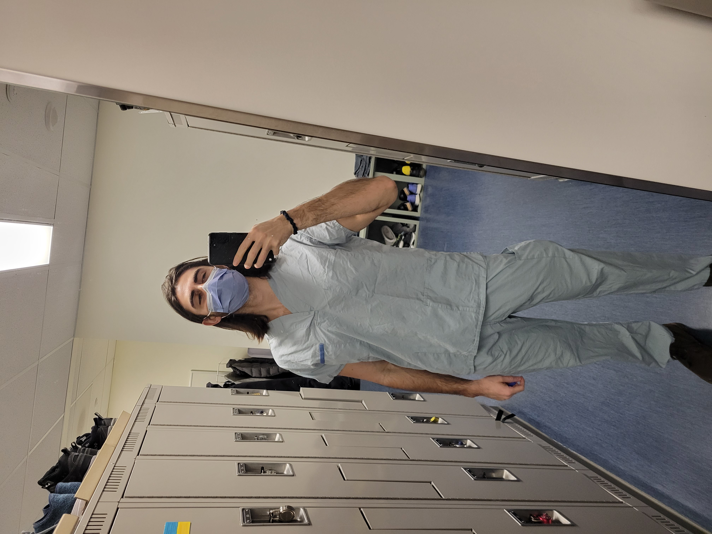
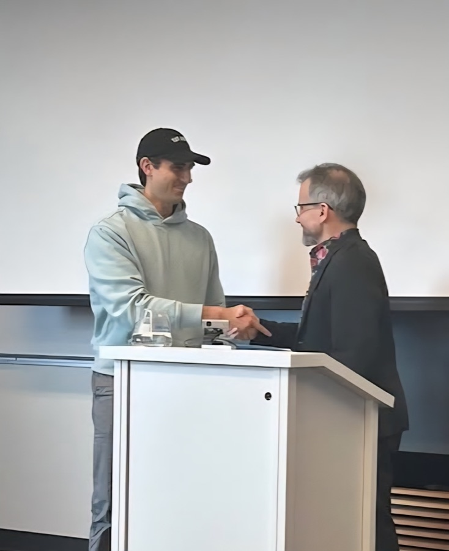
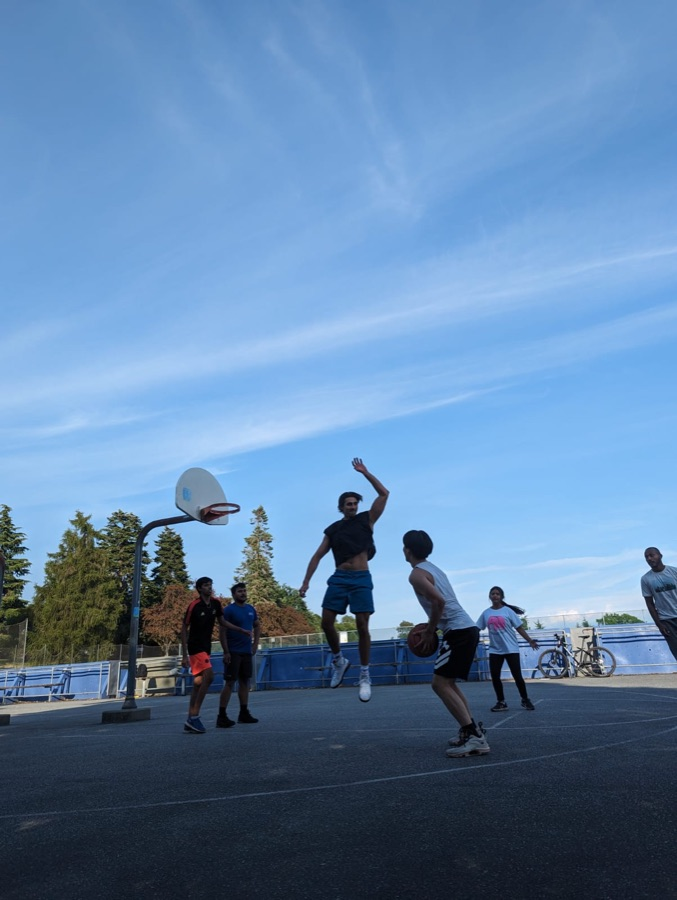

PhD-ing in vis at UBC's InfoVis Lab
Hi, I'm Ryan.
I build visualizations of text that help people make sense of their personal and medical data, without throwing out the messy parts.
Basically, people describe their health in vague, wandering stories, and I want tools that can work with that instead of flattening it into a spreadsheet.
🎓 Expecting to graduate August 2027 — and already thinking about what's next. Open to postdoc conversations.
About me
the short version
I hold a Bachelor's in Psychology from Marist College and a Master's in Social and Cognitive Psychology from NYU, where I focused on decision making.
After my studies I worked as a research assistant in two psychology labs, the DUSC Lab and the Visual Thinking Lab, before applying to PhD programs.
I was initially interested in neuroaesthetics (the neuroscience of art), but pivoted to data visualization after encountering an art installation that used visualization to explain a complex topic. I started wondering if people actually study this kind of work (they do) and began working in the visualization field.
I'm now pursuing my PhD in Computer Science at UBC, working with Tamara Munzner in the InfoVis Lab.
Research interests
what I actually work on
I'm interested in visualizing text, especially the messy, personal way people talk about their health and their lives. Most tools turn that into tidy data by tossing out a lot of it: the fuzzy timing, the "it comes and goes," everything that was happening around it. I'd rather keep it.
So I build and study visualization systems that give people just enough structure to actually look at and analyze their own data, without removing the stuff that made it theirs in the first place.

My timeline
me, at a glance
- publications
- full paper
- poster / workshop
- first author
- co-author
- everything else
- funding
- award
- service
- teaching
- research
- not accepted
-
Marist College — Poughkeepsie, NY
BA, Psychology · Dual minor in Communication & Business
Sep 2010 – May 2014 -
New York University — New York, NY
MA, Psychology · Focus: Cognitive & Social Psychology
2014 – 2016 -
DePaul University Social Cognition Lab — Chicago, IL
Volunteer Research Assistant · PI: Dr. Kimberly Quinn
Sep 2019 – May 2022 -
Visual Thinking Lab, Northwestern University — Evanston, IL
Volunteer Research Assistant · PI: Dr. Steven Franconeri
Feb 2020 – May 2022 -
R. Smith, W. Krenzer, K. Quinn, and P. Gomez. "The Cheerleader Effect: Replication and Extension." Psychonomic Society Annual Meeting, Virtual, Nov. 2020.
-
R. Smith, A. Bellovary, and K. Quinn. "Sense of Place and Student Wellbeing: Preliminary Evidence for Impact of Liked but Not Disliked Spaces." Society for Personality and Social Psychology Annual Convention, Virtual, Feb. 2021.
-
R. Smith and T. Munzner. "How Do Patients Visualize Their Own Health Stories?" SeattleVis Day, Seattle, WA, May 2025.
-
R. Smith, K. D. Chin, and T. Munzner. "HealthTale: A LLM-Assisted Health Story Visualization Tool." BC AI Research-to-Adoption Summit, May 2026.
-
Teaching Assistant — CPSC 100: Computational Thinking
University of British Columbia · Winter 1 2022 (Sep – Dec 2022) -
Teaching Assistant — CPSC 103: Introduction to Systematic Program Design
University of British Columbia · Winter 2 2023 (Jan – Apr 2023) -
Teaching Assistant — CPSC 447: Introduction to Visualization
University of British Columbia · Winter 1 2023 (Sep – Dec 2023) -
Teaching Assistant — CPSC 447: Introduction to Visualization
University of British Columbia · Winter 2 2025 (Jan – Apr 2025) -
MITACS Grant IT38408 — a one-year, $45k grant to collaborate with industry partner Thrive Health.
-
CUPE 2278 TA Union Steward — Computer Science Department, UBC
Feb 2024 – present -
Graduate Student Society Councillor — Executive Oversight Committee, UBC
Apr 2024 – present -
Computer Science Graduate Student Association
Vice President · May 2024 – May 2025 -
R. Smith. "Position Paper: Potential Areas of Bias in Visualization-as-Input Systems." In Proc. Workshop on Envisioning a Research Agenda for Input Visualization, IEEE VIS, 2025.
Visualizations are typically seen as tools for interpreting and analyzing data, yet in visualization-as-input systems, where users enter information directly into a visual interface, the structure of the visualization may actively shape the data input by the user. This paper argues that visual aspects such as Scaffolding Elements (e.g., axes, ranges, and labels) and Anchor Points (e.g., visualized data) influence what users perceive as appropriate, complete, and accurate input. I outline a high level research agenda for the community to empirically study how these structural aspects guide user input. By reframing visualization-as-input as a dynamic way to elicit data, I highlight the need for design strategies that mitigate bias and promote more authentic and representative user data. -
MITACS Grant IT44143 — a two-year, $90k grant to collaborate with industry partner Thrive Health.
-
UBC Faculty of Science Excellence in Service Award — an annual award given to two students in UBC's Faculty of Science for service and positive impact toward the Faculty's goals.
-
Lecturer — COGS 303: Research Methods in Cognitive Systems
Cognitive Systems Program, UBC
Jan 2026 – May 2026 -
Computer Science Graduate Student Association
President · May 2026 – May 2027 -
Social Chair — IEEE VIS 2026 Organizing Committee
Jul 2026 – Nov 2026 -
CHI 2026 Submission — submitted Feb 2026; not accepted.
The work has since been broken up and redistributed into other active submissions. Details withheld pending anonymous review.
-
M. I. B. Oddo, R. Smith, S. Kobourov, and T. Munzner. "Visualization Tasks for Unlabeled Graphs." IEEE Transactions on Visualization and Computer Graphics, 32(7):5969–5983, July 2026.
We investigate tasks that can be accomplished with unlabeled graphs, which are graphs with nodes that do not have persistent or semantically meaningful labels attached. New visualization techniques to represent unlabeled graphs have been proposed, but more understanding of unlabeled graph tasks is required before these techniques can be adequately evaluated. Some network visualization tasks apply to both labeled and unlabeled graphs, but many do not translate between these contexts. We propose a data abstraction model that distinguishes the Unlabeled context from the increasingly semantically rich Labeled, Attributed, and Augmented contexts. We filter tasks collected and gleaned from the literature according to our data abstraction and analyze the surfaced tasks, leading to a taxonomy of abstract tasks for unlabeled graphs. Our task taxonomy is organized according to the Target data under consideration, the Action intended by the user, and the Scope of the data at play. We show the descriptive power of this task abstraction by connecting to concrete examples from previous frameworks, and connecting these abstractions to real-world problems. To showcase the evaluative power of the taxonomy, we perform a preliminary assessment across 6 different network visualization idioms for each task. For each combination of task and visual encoding, we consider the effort required from viewers, the likelihood of task success, and how both factors vary between small-scale and large-scale graphs. -
R. Smith, K. D. Chin, and T. Munzner. "HealthTale: A Patient-Centric Health Story Visualization Tool." IEEE Transactions on Visualization and Computer Graphics (Proc. IEEE VIS 2026), to appear.
Patients often struggle to communicate coherent accounts of their health histories during time-constrained clinical encounters. These accounts, which we refer to as health stories, include both clinical events and lived experiences. Existing systems prioritize structured, clinician-centered data and provide limited support for eliciting and communicating patient-generated narratives. We present HealthTale, a patient-centric visualization system designed to elicit health stories from patients and structure them to facilitate communication during initial clinical conversations. Its design arises from a multi-stage qualitative investigation across domain expert discussions (n = 3), online narratives (n = 20), patient (n = 11) and clinician (n = 6) interviews, and elicited health stories (n = 22), identifying recurring patterns in how individuals construct and communicate their health stories. HealthTale transforms freeform narratives into structured timeline representations, grounded in a data abstraction that models health stories as events grouped by health concern and time. The abstraction captures both clinical and contextual information while accommodating temporally imprecise data and non-linear distributions of events across time. Through evaluation with patients (n = 34) and clinicians (n = 3), we find that HealthTale supports recall, organization, and self-advocacy, while enabling clinicians to rapidly interpret patient-generated narratives and establish a shared understanding. -
R. Smith. "User Study 47B: Interactive Dashboards After Answer-First Analytics." In VIS×SciFi Workshop, IEEE VIS, 2026.
In 2054, most analytic workflows begin with an answer and conclude before anyone has been required to look at the data, an arrangement generally regarded as progress. We report User Study 47B, an evaluation of a legacy interactive dashboard with participants accustomed to answer-first systems. Participants often treated interaction as analysis the system had failed to finish and interpretive ambiguity as an interface awaiting a finalized answer. These responses reverse two familiar visualization values: agency begins to resemble labor, and interpretive openness begins to resemble poor interface quality. We use these findings to ask how visualization can make looking at data feel worthwhile and how it should fit workflows where users begin by uploading data and asking for an answer. This remains a viable direction for the field, although perhaps not the one envisioned in its grant proposals. -
IEEE VIS 2026 Doctoral Colloquium — selected to present my thesis work to a panel of senior visualization researchers.
First author
Full papers
Workshop papers
Posters
Co-authored
- No co-authored publications listed yet.
Awards & honors
the stuff my mom brags about
2026
-
IEEE VIS 2026 Doctoral Colloquium — selected to present my thesis work to a panel of senior visualization researchers.
2025
-
UBC Faculty of Science Excellence in Service Award — an annual award given to two students in UBC's Faculty of Science for service and positive impact toward the Faculty's goals.
-
MITACS Accelerate Grant IT44143 — two years, $90k, with Thrive Health.
2024
-
MITACS Accelerate Grant IT38408 — one year, $45k, with Thrive Health.

Hobbies
what I do when I'm not PhD-ing
My hobbies range from basketball, to soccer, to hiking. I also read a lot, you can see what I'm working through and what I've thought of everything on my StoryGraph. And I play a lot of Magic: The Gathering. My pet deck is my grixis ninja deck.

Get in touch
say hi